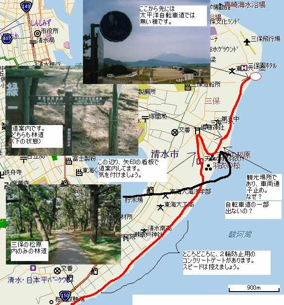

| このページは、2019年3月に保存されたアーカイブです。最新の内容ではない場合がありますのでご注意ください |
|  |
←西 日本平−三保の松原 松林の並ぶ、駿河湾沿いを走行します。三保の松原の観光所に進入するが車両進入禁 止です。自転車は車両です。手車で走破しましょう。松林を抜けると運が良ければ富 士山が見えます。海岸用のスペースが広がります。 どうやら、三保の松原が終点の様です。 終わって想う（シュガー） 総合計 123Km（他に不明な距離はありますが…）。すべてが往復の内容でしたので ２倍の距離を走った事になります。時間がかかりましたが、積み重ねることで可能と なったと思います。道が悪いところもありましたし、すばらしいところもありました。 走破時にサイクリニスト（外人さんもいました）と出合いました。完走バンザイ。 |
| このページは、2019年3月に保存されたアーカイブです。最新の内容ではない場合がありますのでご注意ください |